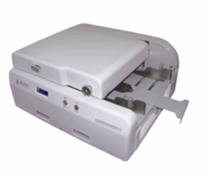
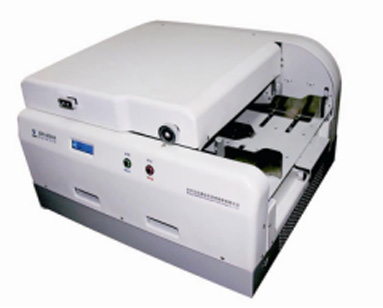

型号 ：2050A（扫描阅读器）
型号 ：2050A（扫描阅读器）

产品简介
ISR2050A可以在高速扫描图像的同时实时读取信息卡上的OMR、OCR、BAR信息，具有扫描速度快、识别精度高、图像质量好、工作效率高等特点； ISR2050A具有很强的纸张适应能力，能够扫描不同克度的纸张；ISR2050提供根据应用需求定义剪取区域的功能，方便客户有选择地将纸面上的信息分类存储；它是网上阅卷、档案电子化、调查统计等基于图像采集数据应用的专业化设备。
应用领域
ISR2050A智能高速图像扫描阅读机广泛应用于中小型招生考试的考生信息采集及网上评卷、调查统计问卷的数据收集、选举中的选票自动统计以及银行、保险、工商、税务等政府部门各类票据、报表、档案的电子化存档等。
使用优势
作为超小型A3尺寸信息卡高速扫描设备，ISR2050A具有诸如无故障、不间断扫描多种类型文件的特性；先进的图像技术与多种自动化功能，以及对纸张适应性的加强，使您能够比以前更快而且更可靠地扫描文件；通过ISR2050A嵌入式的软件应用程序来捕获、创建和管理您的图像信息，实现高速、高品质的彩色双面扫描，令您的工作更轻松。另外本扫描仪可7*24小时不间断工作，大大提高扫描效率。
 型号 ：6050A（智能高速图像扫描阅读机）
型号 ：6050A（智能高速图像扫描阅读机）

产品简介
ISR6050A鑫e评网评一体机将高速智能扫描仪、光标阅读机、鑫e评网上评卷系统等功能集成于一体的专业化考试应用产品，适应各种校园级、区县级的考试需求，这样一台设备完全可以取代以前高速扫描仪、OMR设备及软件、阅卷软件、PC服务器等的集合。
应用领域
ISR6050A可提供高速可靠的图像扫描、学生考籍管理、考试制卡、网上评卷、成绩统计分析等功能，特别适合于校园级考试和中等规模考试（如市级、区级模拟考试，校级联考等）的网上评卷项目和扫描工作需求。
使用优势
作为网评一体机，提供简单方便的操作界面，可以让考试组织、答题卡制作、答题卡扫描、网上评卷、成绩统计分析变得很轻松，极大的促进学校教学质量的评估工作。使用维护方便，ISR6050A出厂前内置操作系统和网评软件，系统和应用软件现场免安装，并支持一键恢复功能。